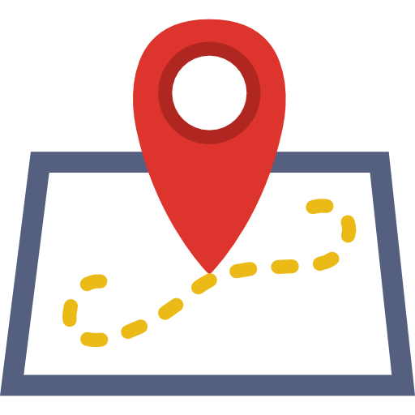

Lokalizacja w czasie rzeczywistym
Wykorzystanie balonu stratosferycznego
Promocja projektu

Śledzenie balonu za pomocą GPS
Szkoła nie musi być monotonna, nauka nie musi być nudna
Razem z nauczycielami zainicjowaliśmy projekt naukowy, wyślemy w niebo balon i zobaczymy co się w tym niebie dzieje
Dzięki funduszom sponsorów tworzymy skrzynkę wyposażoną w czujniki którą podepniemy do balonu na hel. Mając połączenie na żywo będziemy zbierać i analizować dane i lokalizację. Na koniec zostanie bezpiecznie opuszczony na spadochronie aby wykorzystać go ponownie. Aby to osiągnąć wykorzystamy arduino, łączność radiową, system GPS i drukowanie przestrzenne.
Lokalizacja w czasie rzeczywistym
Wykorzystanie balonu stratosferycznego
Promocja projektu
Śledzenie balonu za pomocą GPS
Dawid Padusiński
Kacper Smysło
Kamil Turski
Konrad Kreczko
Kordian Dziwisz
Maciej Stolarek
Michał Ronkowski
Michał Waluszkowski
Patryk Anioł
Patryk Sokolski
Szczepan Śledź
Zapraszamy do kontaktu z nami:
balon.jumper@gmail.com